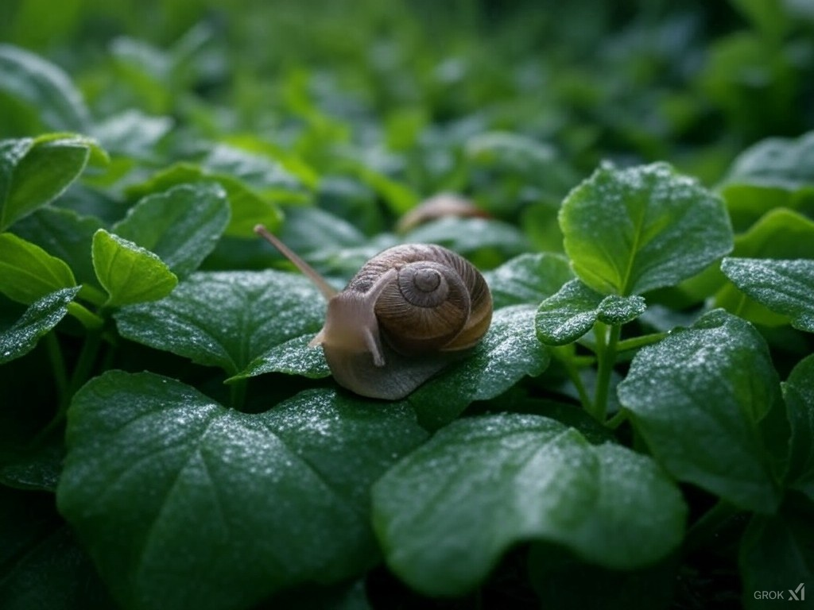
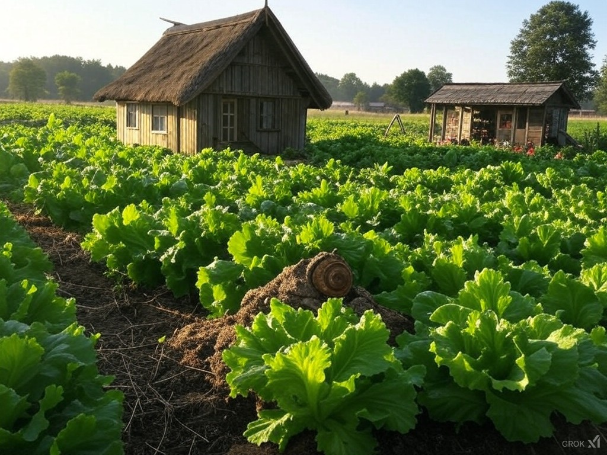

Derrière le nom de Slow Go Show.
Slow Go Show a pour mission de valoriser l’escargot sous toutes ses formes : de la production de bave de qualité pour les soins cosmétiques à l’élevage pour l’alimentation, en passant par l’organisation de courses d’escargots. Notre objectif est de promouvoir une agriculture durable et innovante, tout en offrant des expériences uniques autour de cet animal fascinant. Notre motivation réside dans l'alliance de la tradition et de l'innovation pour offrir des produits et des événements qui surprennent et séduisent.

Chez Slow Go Show, nous sommes animés par des valeurs fortes : le respect de l'environnement, l'innovation responsable et le partage. Nous privilégions des pratiques agricoles durables, en veillant à réduire notre empreinte écologique tout en garantissant des produits de qualité. La transparence, la créativité et l'engagement sont au cœur de nos actions, que ce soit avec nos clients ou nos partenaires. Nous souhaitons également offrir des expériences conviviales à travers nos événements, en mettant en lumière l'escargot comme un élément essentiel de la biodiversité et du bien-être.
Slow Go Show est une entreprise française innovante qui organise des courses d’escargots et propose des visites éducatives de sa ferme. Elle élève plusieurs espèces d’escargots et fabrique des produits cosmétiques à base de bave, ainsi que des goodies. Engagée pour l’environnement, elle sensibilise à la biodiversité tout en favorisant une production locale respectueuse et diversifiée.
"Sur le sable des arènes où la lenteur devient force, Goliathocoque, modeste escargot, triomphe des géants, prouvant que la patience et la persévérance forgent la véritable grandeur."


Qui
sera
le
plus
rapide
Ou
plutot
le
moins
lent